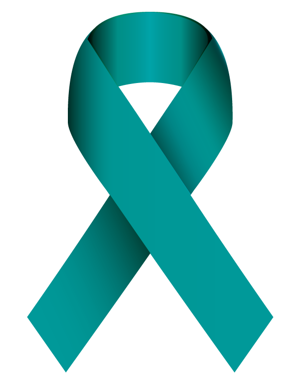

How Can You Help?
Karen Hawkins is not the only person to be harmed by sexual assault. Sexual assult is much more common that many think. Any unwanted sexual feelings or actions can be categorized as sexual assult.
Be a Friend
If you know someone that has been affected by sexual assult in any way be a friend for them to lean on. Always be willing to listen.
Stand Up
Don't let stories be pushed aside. If you hear of a situation that may have taken place don't be a bystander. Stand up for the victim and tell a professional about the situation
Spread Awareness
Sexual assult is a heavy subject but if we aviod conversations then there will continue to be people that suffer. Spread the word and educate other on what sexual assult is.